Runoff Methods & PCSWMM Hydraulics — Course Notes
Section 1: Lag Time and Time of Concentration
Two fundamental time parameters describe how quickly a watershed responds to a storm: lag time and time of concentration. Both are critical inputs for unit hydrograph analysis and for estimating peak discharge.
The lag time, tL, is the time from the center of mass of the excess rainfall hyetograph to the peak discharge of the streamflow hydrograph. It represents the average travel time across the watershed.
The time of concentration, tC, is the total response time of the watershed — the time needed for rainfall at the most remote point to reach the outlet. It is formally defined as the time from the center of mass of excess rainfall to the inflection point on the falling limb of the hydrograph.
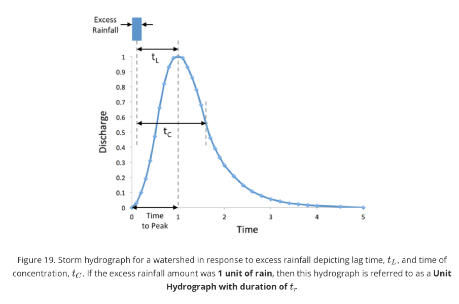
Figure 19. Storm hydrograph for a watershed in response to excess rainfall, showing lag time tL and time of concentration tC. When the excess rainfall equals 1 unit, this hydrograph is a Unit Hydrograph with duration tr.
For ungauged watersheds, tL and tC must be estimated from physical watershed characteristics. Watt and Chow (1985) developed the following regression equation from data collected across many gauged North American watersheds, relating lag time to stream length L and channel slope Sc:
Longer watersheds and shallower slopes both increase travel time — and therefore tL and tC — because flow velocities are slower and the path water must travel is longer.
Section 2: Unit Hydrograph
Definition and Overview
A Unit Hydrograph (UH) is the direct runoff hydrograph that results from exactly 1 inch (or 1 cm) of excess rainfall generated uniformly across a watershed at a constant rate over a specified effective duration. The UH captures the hydraulic signature of the watershed in a reusable form.
The UH method treats the watershed as a linear system: the runoff response to any multi-period storm can be computed by scaling the UH by each rainfall excess increment, offsetting each scaled copy in time, and summing the results. This superposition process is called convolution. It makes the UH a powerful tool for predicting storm hydrographs without solving complex hydraulic equations.
Application Example — Convolution
The example below demonstrates how to derive the total direct runoff hydrograph (Total DRH) from a four-period storm using a known watershed UH. Precipitation values have a constant abstraction of 0.3 in/hr subtracted to produce excess precipitation (Pe) values. Each Pe value scales a copy of the UH offset by one time step, producing individual direct runoff hydrographs DRH1 through DRH4. These are summed at each time step to get the Total DRH.
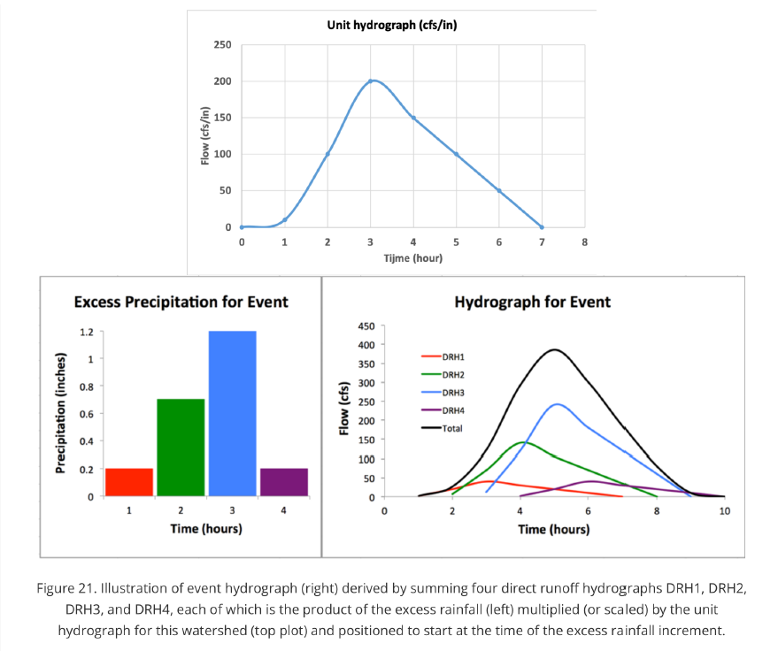
Figure 21. Event hydrograph (right) derived by summing four direct runoff hydrographs DRH1–DRH4. Each DRH is the UH (top plot) scaled by an excess precipitation value (left bar chart) and started at the beginning of that time period.
Unit Hydrograph for Watershed
| Time (hr) | 1 | 2 | 3 | 4 | 5 | 6 |
|---|---|---|---|---|---|---|
| Unit Hydrograph (cfs/in) | 10 | 100 | 200 | 150 | 100 | 50 |
Rain Event
| Time (hr) | 1 | 2 | 3 | 4 |
|---|---|---|---|---|
| Precipitation (in) | 0.5 | 1.0 | 1.5 | 0.5 |
| Abstractions (in) | 0.3 | 0.3 | 0.3 | 0.3 |
| Pe = Precip − Abstractions (in) | 0.2 | 0.7 | 1.2 | 0.2 |
Calculating the Hydrograph for the Event
| Time (hr) | UH (cfs/in) | DRH1 Pe=0.2 | DRH2 Pe=0.7 | DRH3 Pe=1.2 | DRH4 Pe=0.2 | Total DRH |
|---|---|---|---|---|---|---|
| 1 | 10 | 2 | — | — | — | 2 |
| 2 | 100 | 20 | 7 | — | — | 27 |
| 3 | 200 | 40 | 70 | 12 | — | 122 |
| 4 | 150 | 30 | 140 | 120 | 2 | 292 |
| 5 | 100 | 20 | 105 | 240 | 20 | 385 |
| 6 | 50 | 10 | 70 | 180 | 40 | 300 |
| 7 | — | 0 | 35 | 120 | 30 | 185 |
| 8 | — | — | 0 | 60 | 20 | 80 |
| 9 | — | — | — | 0 | 10 | 10 |
| 10 | — | — | — | — | 0 | 0 |
DRH1 = UH × 0.2, starting at t = 1 hr. DRH2 = UH × 0.7, lagged to start at t = 2 hr. DRH3 = UH × 1.2, starting at t = 3 hr. DRH4 = UH × 0.2, starting at t = 4 hr. The Total DRH at any time step is the row sum across all active DRH columns.
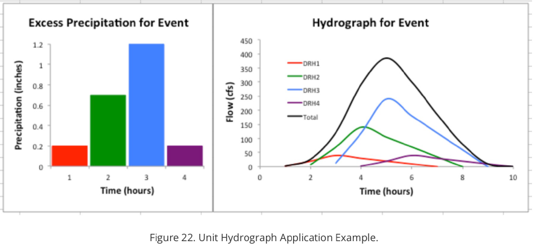
Figure 22. Unit Hydrograph Application Example. Left: excess precipitation bar chart for the four time periods (DRH1 red, DRH2 green, DRH3 blue, DRH4 purple). Right: individual DRH contributions and total DRH (black).
Key Assumptions and Limitations
The unit hydrograph approach rests on six foundational assumptions:
- Excess rainfall has a constant intensity within the effective duration.
- Excess rainfall is uniformly distributed over the entire watershed.
- The total time of the direct runoff hydrograph from any excess rainfall increment is constant.
- DRH ordinates are directly proportional to the amount of direct runoff produced.
- The total runoff hydrograph is formed by summing the individual incremental DRH ordinates at each time step.
- For a given watershed, the hydrograph shape from a given excess rainfall reflects the fixed, unchanging characteristics of that watershed.
These assumptions have real limitations. Variable rainfall intensity within a storm (violating #1), or rainfall concentrated over only part of the watershed (#2), can cause the actual response to differ from the UH prediction. The proportionality assumption (#4) ignores the fact that deeper flow moves faster — a nonlinear effect the UH cannot represent. The assumption of a fixed base time (#3) and unchanged watershed characteristics (#6) similarly overlook how flow velocity and watershed wetness change with storm magnitude. Despite these shortcomings, the UH method remains one of the most widely used approaches in applied engineering hydrology.
Section 3: Synthetic Unit Hydrograph — NRCS/SCS Method
A synthetic unit hydrograph is derived entirely from physical watershed characteristics rather than from observed streamflow records. This makes it applicable wherever no flow data exist. The SCS dimensionless unit hydrograph, developed by the U.S. Soil Conservation Service (now NRCS), is the most commonly used synthetic UH in practice. It has a fixed standard shape that is scaled using watershed-specific lag time and drainage area to produce the actual UH for a given watershed.
In the SCS approach, lag time is computed from three watershed properties: main stream length L, maximum retention S (from the CN method), and average watershed percent slope Y:
When soil and land use information are unavailable and CN cannot be determined, the Watt and Chow equation from Section 1 is used instead.
Once lag time is established, all other SCS time parameters follow:
tp = tL / 0.9 (tp = time to peak)
tc = (5/3) tL = 1.5 tp (tc = time of concentration)
tR = 0.2 tp = 0.133 tc (tR = effective storm duration)
Unit Peak Discharge
Because the UH represents a response to 1 unit of rainfall, its peak ordinate must be scaled so the volume under the UH equals 1 unit of rainfall times watershed area. In Imperial units:
In SI units:
Scaling the SCS Dimensionless UH
Once tp and qp are known, the dimensionless SCS UH (Figure 23) is scaled by multiplying the normalized time axis by tp and the normalized discharge axis by qp to produce the actual UH ordinates at desired time intervals for that specific watershed.
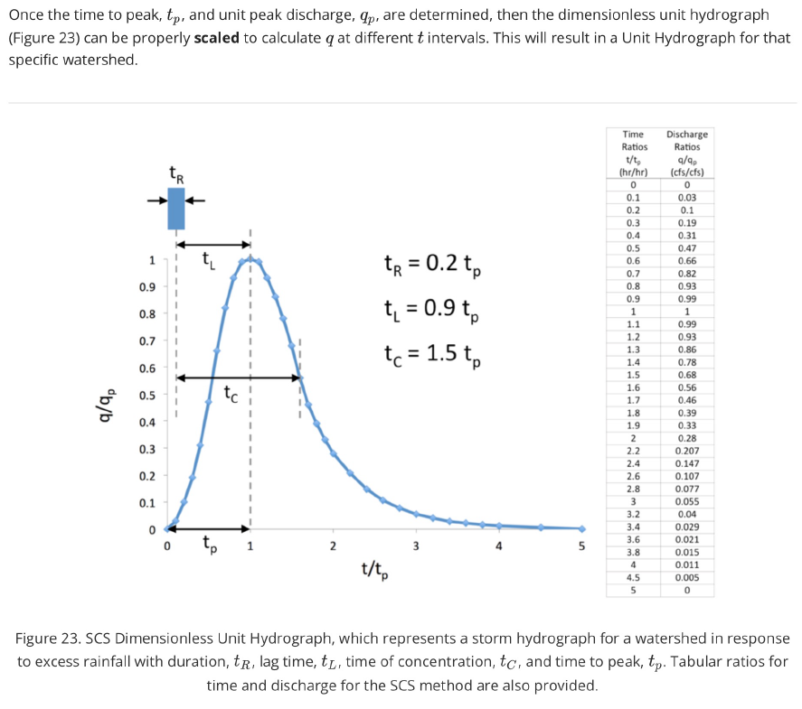
Figure 23. SCS Dimensionless Unit Hydrograph showing q/qp vs t/tp, with key time relationships annotated. The tabular ratios alongside the figure are used to scale this shape to a specific watershed.
SCS Dimensionless UH — Time and Discharge Ratios
| t / tp | q / qp | t / tp | q / qp |
|---|---|---|---|
| 0 | 0 | 1.1 | 0.99 |
| 0.1 | 0.03 | 1.2 | 0.93 |
| 0.2 | 0.10 | 1.3 | 0.86 |
| 0.3 | 0.19 | 1.4 | 0.78 |
| 0.4 | 0.31 | 1.5 | 0.68 |
| 0.5 | 0.47 | 1.6 | 0.56 |
| 0.6 | 0.66 | 1.7 | 0.46 |
| 0.7 | 0.82 | 1.8 | 0.39 |
| 0.8 | 0.93 | 1.9 | 0.33 |
| 0.9 | 0.99 | 2.0 | 0.28 |
| 1.0 | 1.00 | 2.2 | 0.207 |
| 2.4 | 0.147 | ||
| 2.6 | 0.107 | ||
| 2.8 | 0.077 | ||
| 3.0 | 0.055 | ||
| 3.2 | 0.040 | ||
| 3.4 | 0.029 | ||
| 3.6 | 0.021 | ||
| 3.8 | 0.015 | ||
| 4.0 | 0.011 | ||
| 4.5 | 0.005 | ||
| 5.0 | 0 |
Section 4: The Rational Method
The simplest and most widely used method for estimating peak runoff in urban hydrology is the Rational Method. While a full hydrograph provides more information, many design situations (inlet sizing, storm drain design, small culverts) only require the peak discharge, and the Rational Method delivers this efficiently with minimal data requirements.
A unit conversion factor of 1.008 technically applies (1 ac·in/hr ≈ 1.008 cfs), but it is so close to unity that most engineers drop it in hand calculations. Computer programs typically include it automatically.
The Rational Method assumes rainfall is uniform and constant in intensity across the entire catchment for a duration at least equal to the time of concentration — the point at which every part of the catchment contributes runoff simultaneously. Because of this, the method is only reliable for smaller catchments, generally up to 200 acres. The runoff coefficient C accounts for all catchment abstractions.
Runoff Coefficient C
C is selected from established tables based on land cover, surface type, and slope. The values below are typical for 2–10 year return periods; higher return periods warrant higher C values.
| Description of Area | Runoff Coefficient C |
|---|---|
| Business | |
| Downtown areas | 0.70 – 0.95 |
| Neighborhood areas | 0.50 – 0.70 |
| Residential | |
| Single-family areas | 0.30 – 0.50 |
| Multi-units, detached | 0.40 – 0.60 |
| Multi-units, attached | 0.60 – 0.75 |
| Residential, suburban | 0.25 – 0.40 |
| Apartment dwelling areas | 0.50 – 0.70 |
| Industrial | |
| Light areas | 0.50 – 0.80 |
| Heavy areas | 0.60 – 0.90 |
| Parks, cemeteries | 0.10 – 0.25 |
| Playgrounds | 0.20 – 0.35 |
| Railroad yard areas | 0.20 – 0.40 |
| Unimproved areas | 0.10 – 0.30 |
| Streets | |
| Asphalt | 0.70 – 0.95 |
| Concrete | 0.80 – 0.95 |
| Brick | 0.70 – 0.85 |
| Drives and walks | 0.75 – 0.85 |
| Roofs | 0.75 – 0.95 |
| Lawns, sandy soil | |
| Flat, <2% | 0.05 – 0.10 |
| Average, 2%–7% | 0.10 – 0.15 |
| Steep, >7% | 0.15 – 0.20 |
| Lawns, heavy soil | |
| Flat, <2% | 0.13 – 0.17 |
| Average, 2%–7% | 0.18 – 0.22 |
| Steep, >7% | 0.25 – 0.35 |
Source: ASCE and WPCF (1969). Higher values apply for return periods above 10 years.
For catchments with mixed land use, use an area-weighted composite C:
Rainfall Intensity and IDF Curves
Peak runoff in the Rational Method is maximized when the storm duration equals the time of concentration — at that moment, every part of the catchment contributes simultaneously. This duration is paired with the design return period to select the design intensity i from an Intensity-Duration-Frequency (IDF) curve.
IDF curves are statistical summaries of historical rainfall data, showing how intensity varies with duration and exceedance probability. Design intensities for this course are taken from NOAA Atlas 14 Point Precipitation Frequency Estimates (hdsc.nws.noaa.gov/pfds/). When Atlas 14 is unavailable, locally developed IDF equations from the DOTD Hydraulics Manual may be used as a backup, though they may underestimate intensities relative to the more current Atlas 14 data.
Time of Concentration — Kinematic Wave Equation
This module uses the physically-based Kinematic Wave Equation for tc, which represents a wave traveling downstream through overland flow, open channels, and closed conduits. It gives a shorter and more realistic tc for urban sites than empirical length-based methods.
Turbulent flow (m = 5/3): α = 1.49√S / n
Laminar flow (m = 3): α = gS / 3ν
S = overland slope | n = Manning's roughness | g = gravity | ν = kinematic viscosity
Overland sheet flow — the shallow surface runoff that feeds into defined channels — occurs in the uppermost segment of the drainage path, just downstream of the watershed divide. Its length is taken as the shorter of: the distance from the divide to the top of a defined channel, or 300 feet. Beyond 300 feet in urban areas, the flow usually transitions to shallow concentrated flow or enters a defined channel, and the kinematic wave equation is no longer appropriate.
In open channel and conduit flow, flood waves travel at the dynamic wave speed:
Section 5: SCS Curve Number (CN) Method
The NRCS developed a widely-used procedure for partitioning total storm rainfall into three components: initial abstraction Ia (interception, depression storage, and early infiltration before runoff begins), continuing infiltration F after runoff starts, and effective rainfall Pe that becomes direct runoff.
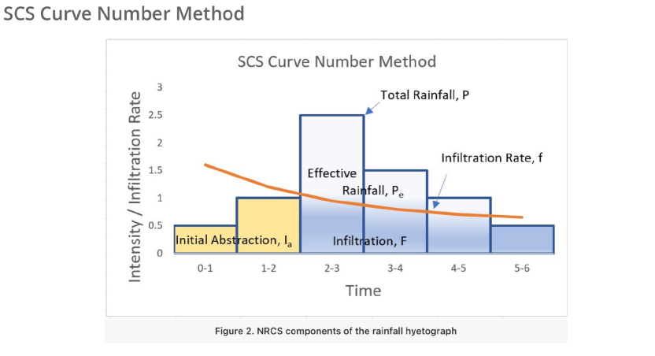
Figure 2. NRCS components of the rainfall hyetograph. Total rainfall P is split into Initial Abstraction Ia, continuing Infiltration F, and Effective Rainfall Pe which becomes direct runoff.
From conservation of mass: Pe = (P − Ia) − F. The SCS method assumes the ratio of actual retention to maximum possible retention S equals the ratio of effective rainfall to maximum possible effective rainfall:
Solving for Pe:
From NRCS data analysis, initial abstraction is approximately 20% of maximum potential retention:
Substituting gives the standard simplified SCS runoff equation:
Maximum potential retention S is computed from the Curve Number:
Higher CN values (80–98) represent impervious or poorly draining surfaces with high runoff potential. Lower CN values represent pervious, well-draining surfaces that absorb most rainfall. CN is tabulated by the NRCS as a function of land use and hydrologic soil group for standard AMC II (average antecedent moisture) conditions.
CN Table for Urban Areas (NRCS Table 2-2a)
The following CN values apply to fully developed urban areas under AMC II conditions with Ia = 0.2S. Source: NRCS National Engineering Handbook, 2004, Chapter 09.
| Cover Type and Condition | Avg % Impervious | HSG A | HSG B | HSG C | HSG D |
|---|---|---|---|---|---|
| Open space (lawns, parks, golf courses, cemeteries) | |||||
| Poor condition (grass <50%) | 68 | 79 | 86 | 89 | |
| Fair condition (grass 50–75%) | 49 | 69 | 79 | 84 | |
| Good condition (grass >75%) | 39 | 61 | 74 | 80 | |
| Impervious areas | |||||
| Paved parking lots, roofs, driveways (excl. ROW) | 98 | 98 | 98 | 98 | |
| Streets and roads | |||||
| Paved; curbs and storm sewers (excl. ROW) | 98 | 98 | 98 | 98 | |
| Paved; open ditches (incl. ROW) | 83 | 89 | 92 | 93 | |
| Gravel (incl. ROW) | 76 | 85 | 89 | 91 | |
| Dirt (incl. ROW) | 72 | 82 | 87 | 89 | |
| Urban districts | |||||
| Commercial and business | 85% | 89 | 92 | 94 | 95 |
| Industrial | 72% | 81 | 88 | 91 | 93 |
| Residential — by average lot size | |||||
| 1/8 acre or less (town houses) | 65% | 77 | 85 | 90 | 92 |
| 1/4 acre | 38% | 61 | 75 | 83 | 87 |
| 1/3 acre | 30% | 57 | 72 | 81 | 86 |
| 1/2 acre | 25% | 54 | 70 | 80 | 85 |
| 1 acre | 20% | 51 | 68 | 79 | 84 |
| 2 acres | 12% | 46 | 65 | 77 | 82 |
| Developing urban areas | |||||
| Newly graded (pervious only, no vegetation) | 77 | 86 | 91 | 94 | |
Source: NRCS NEH 2004, Ch. 09. AMC II; Ia = 0.2S. Additional CN tables: nrcs.usda.gov
Antecedent Moisture Condition
The CN table values above assume AMC II — average antecedent moisture. If conditions are drier (AMC I) or wetter (AMC III), CN is adjusted using these empirical equations (Chow, Maidment, and Mays, 1988):
Area-Averaged Composite CN
When a watershed contains multiple land use and soil type combinations, each sub-area receives a CN from the table. A single composite CN is then computed by area-weighting:
Engineering judgment is needed when deciding whether to treat a site as one composite catchment or to subdivide it into separate sub-catchments. Sub-areas with very extreme CN values (very high or very low) relative to the rest of the watershed can unrealistically pull the composite value if the areas involved are small.
Section 6: PCSWMM Hydraulics
Runoff generated by subcatchments in PCSWMM is routed through a network of drainage elements toward an outfall. PCSWMM includes a built-in solver for open-channel hydraulics that calculates water depths and flow rates throughout the network. Three element types form every drainage network in PCSWMM: outfalls, junctions, and conduits.
Outfalls
An outfall is the discharge point of the project watershed — the location where water exits the drainage network. Any water reaching the outfall is removed from the model and not tracked further. The most critical attribute of an outfall is its invert elevation, which sets the water surface boundary condition at the outlet.
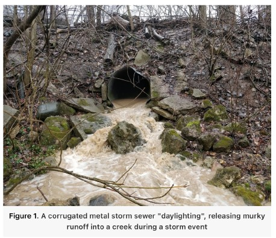
Figure 1. A corrugated metal storm sewer discharging murky stormwater runoff into a creek during a storm event. This pipe end represents the outfall node in a drainage network model.
Junctions
A junction is a point element representing either a storm sewer inlet — where surface runoff enters the underground pipe network — or a manhole — where pipes connect, change direction, or change size. In practice, a junction is placed wherever conduits need to be linked or wherever subcatchment runoff is discharged into the network.
PCSWMM models a junction as a vertical cylinder that water can fill. Its two defining attributes are:
- Invert elevation — the bottom of the cylinder, corresponding to the pipe invert at that location.
- Depth — the vertical distance from the invert to the top of the structure (ground surface or manhole lid). If water rises above this depth, flooding occurs and water is lost from the model — representing overland ponding or surface overflow.
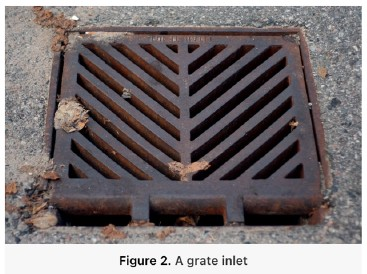
Figure 2. A grate inlet — a common junction type where surface runoff enters the underground storm sewer network.
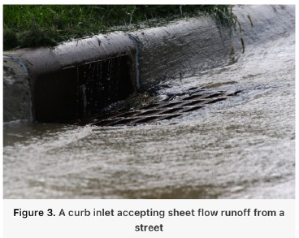
Figure 3. A curb inlet accepting sheet flow runoff from a street during a storm event.
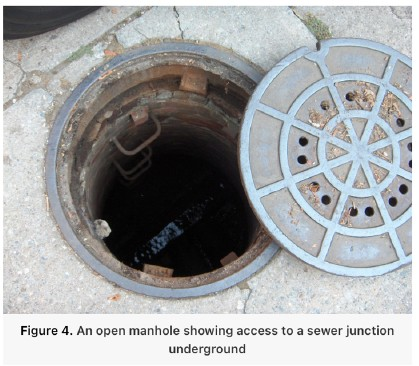
Figure 4. An open manhole providing access to a below-grade sewer junction where pipes connect underground.
Conduits and Connectivity
A conduit is a pipe or open channel connecting two junction nodes. In most urban settings, conduits are circular precast concrete pipes — the simplest case to model because geometry is fully defined by a single diameter. Conduits can also be natural or engineered channels with irregular cross-sections, which are more complex to characterize.
The three key conduit attributes in PCSWMM are:
- Length — the physical pipe or channel length.
- Manning's roughness coefficient n — determined by material; governs flow resistance and velocity.
- Geometry — for circular pipes, the "Geom 1" attribute is the pipe diameter. For other shapes, the Cross-Section attribute and associated geometry parameters define the flow cross-section.
Figure 5. Precast concrete pipe being laid into a trench — the most common conduit type in urban storm sewer systems.
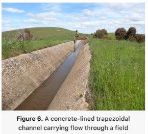
Figure 6. A concrete-lined trapezoidal channel — an engineered open channel conduit type in PCSWMM.
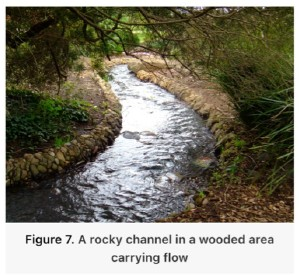
Figure 7. A rocky natural channel carrying flow — an example of an irregular, natural conduit that requires more effort to characterize in a PCSWMM model.
Link-and-Node System and Connectivity
PCSWMM operates as a link-and-node system. Junctions and outfalls are the nodes — point objects that store and release water. Conduits are the links — objects that connect nodes and convey water between them. Together they form the complete drainage network.
A critical rule: elevation information is entered at the nodes, not the conduits. PCSWMM automatically calculates each conduit's slope from the invert elevations of its upstream and downstream junctions combined with the conduit's length. This means accurate junction invert elevations are essential — any error there propagates directly into pipe slopes and all downstream hydraulic calculations.